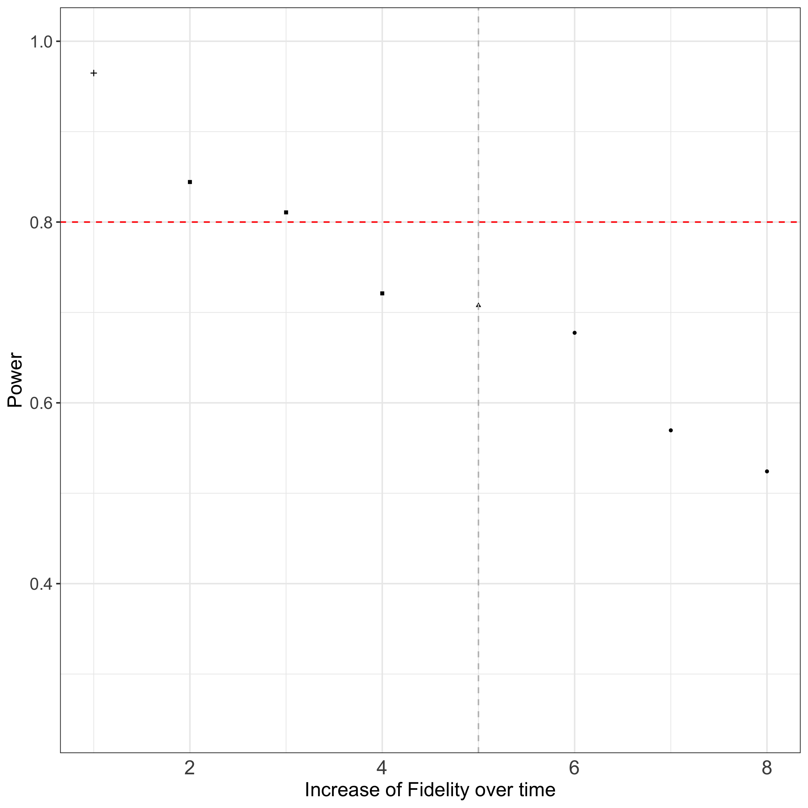

2 Step-by-step simulation
The following chapter is separated in two parts:
- Simulation experiment for one setting by choosing between
- Parallel or stepped wedge designs
- Studies with different fidelity patterns
- Parallel or stepped wedge designs
- Simulation experiments to compare of several fidelity patterns
Figure 2.1 provides an overview of the simulation workflow.
2.1 Simulation experiment for one setting
According to the inner frame of Figure 2.1, several specifications have to be made to evaluate the performance of a chosen design and fidelity pattern.
Within each simulation-experiment, the steps data sampling and effect estimation will be repeated (further explanation see Chapter 3.) To simplify the process of the whole simulation-experiment, we packaged the code into the R package {fidelitysim}.
The function fidelitysim::simulation() includes the steps: data sampling for a specific design and existing implementation error, effect estimation, performance measures calculation and the following parameters are needed as arguments to the function:
- number of repeats for the simulation
- chosen design (including study design, number of cluster, time points and individuals per cluster)
- model parameters (effect, variances, …)
- two design matrices which indicates whether deviation from perfect situations are assumed or not
The outputs of the function are:
- effect estimates
- performance measures
After repeating the steps of the simulation the obtained effect estimates can be evaluated for the performance of the model. The following performance measures of a simulation are provided:
Bias: mean deviation of the estimates from the true value of the parameter of interest (intervention effect) is an indicator of accuracy
Coverage: measurement used to control the Type I error rate for testing the null hypothesis (H0) of no effect
Power: proportion of simulation samples in which the H0 of no effect is rejected at a significance level of \(\alpha\) when H0 is false (is related to the empirical Type II error rate).
In the following, we will show an example of a whole simulation experiment for a parallel cluster randomized trial. Further we will point out necessary adaptions for stepped-wedge designs (regarding the parameter setting).
First, make sure that necessary packages are loaded (and to obtain the same results) indicate a seed for the simulation:
# load necessary packages
library(fidelitysim)
library(samplingDataCRT)
# seed
set.seed(1234)One setting includes the specification of:
- Study design
- Assumptions about fidelity pattern
- Model parameter
- Iterations of the simulation
and finally,
- the simulation experiment can be performed.
2.1.1 Study design
Based on the study setup, the following parameters for the study design need to be defined:
- No. of clusters (e.g hospitals)
- No. of individuals per cluster (and time point) as the cluster size
- No. of time points the cluster were followed
- Design type controls if individuals will be followed over time (cross-sectional or longitudinal): cross-sectional type, which indicates trials where individuals within the cluster can change over time points (however this design indicator is not necessary for conducting the design matrix)
A design matrix according the study design has to be determined by the function designMatrix(). Here, two arguments are specific for the different types of studies. If the design = 'parallel', then the parameter nSW indicates the number of clusters as being the control group. If choosing design = 'SWD' (which is also set by default), the parameter nSW indicates the number of cluster-switches per time point from control to intervention group (which highly dependent on the number of clusters and time points).
For our example we will use the following parameter:
- Number of clusters: 6
- Cluster size: 10
- Number of time points: 7
- Cross-sectional design
and 3 clusters are in the control and 3 clusters in the intervention group.
In the next step we determine the corresponding design matrix for a parallel cluster randomized study with this specific set of design parameters as follows:
## Design matrix ##
I <- 6 # number of clusters
J <- 10 # number of individuals per cluster (used later in simulation-step)
K <- 7 # number of time points
Sw <- 1 # number of cluster switches per time point can be manually set
type <- "cross-sec" #Cross-sectional design, indicates that
#individuals within the cluster can change over time points
# design matrix for parallel design
(designMat_prll <- designMatrix(
nC = I, nT = K, nSw = round(I / 2),
design = "parallel"
)) [,1] [,2] [,3] [,4] [,5] [,6] [,7]
[1,] 0 0 0 0 0 0 0
[2,] 0 0 0 0 0 0 0
[3,] 0 0 0 0 0 0 0
[4,] 1 1 1 1 1 1 1
[5,] 1 1 1 1 1 1 1
[6,] 1 1 1 1 1 1 12.1.2 Assumptions about fidelity pattern
The following step is a central part of this tutorial. We want to examine different fidelity patterns and their implications for the study effects.
To simulate a specific fidelity pattern, a second design matrix indicating the pattern of fidelity has to be provided and indicates if there are deviations from the perfect situation (100% fidelity) present or not. For the simulation we have to add fractional values according to the chosen fidelity pattern. There are 3 functions within the R-package {fidelitysim} that can be used to specify several fidelity patterns. The patterns can be specified based on a slow, linear or fast increase and the respective start and end value for fidelity. For further explanation of fidelity patterns see Section 3.3. The selected fidelity patterns can then be pushed to the design matrix with the R-package {samplingDataCRT}, for more explanation see Section 3.2.
For our example we use the same design parameters, i.e. parallel cluster randomized trial, 6 timepoints, etc. and assume a linear increase of fidelity from 40% to 80% from the first measurement point after introduction of the intervention to the final measurement point (time point K). Based on these parameters we will create a new design matrix X.A that incorporates fractional values based on the provided fidelity pattern. This new design matrix will be used as a reference matrix in our simulation.
3 arguments have to be specified to determine the fidelity pattern using the provided function find.Fidelity.linear:
### Fidelity parameters ###
# Fidelity at the begin
Fid.T1 <- 0.4
# Fidelity at the end
Fid.End <- 0.8
# slope for linear function
m <- (Fid.T1 - Fid.End) / (1 - (K - 1))# model linear increase
res.lin <- find.Fidelity.linear(time.points = K, Fid.End, Fid.T1)(The application of the other two functions for slow (exponential) and fast (logarithmic) increase are shown in Section 3.3.)
Then, we create the new design matrix using the function implemMatrix.parallel :
# design matrix of a linear fidelity pattern
(fidelMat_prll <- implemMatrix.parallel(
nC = I, nT = K, nSw = round(I / 2),
pattern = res.lin[, "Fidelity.Prozent"] / 100
)) [,1] [,2] [,3] [,4] [,5] [,6] [,7]
[1,] 0.0 0.00 0.00 0.0 0.00 0.00 0.0
[2,] 0.0 0.00 0.00 0.0 0.00 0.00 0.0
[3,] 0.0 0.00 0.00 0.0 0.00 0.00 0.0
[4,] 0.4 0.47 0.53 0.6 0.67 0.73 0.8
[5,] 0.4 0.47 0.53 0.6 0.67 0.73 0.8
[6,] 0.4 0.47 0.53 0.6 0.67 0.73 0.8This matrix reflect the fidelity pattern including the implementation error (deviation form 100%). Both design matrices are later used for the simulation as arguments X = designMat_prll and X.A = fidelMat_prll for simulation Section 2.1.5. In a perfect situation - where we assume 100% fidelity at every time point, both matrices are the same.
2.1.3 Specifying model parameter
In addition to the design parameters, we have to define the following model parameters as well:
- Baseline mean of the outcome of interest (e.g. mean quality of life score) \(\mu_0\)
- Intervention effect (the change of scores after intervention) \(\Theta\)
- Intra-cluster correlation coefficient ICC (between cluster and error variance \(\sigma_c\), \(\sigma_e\) )
- If applicable: time trend (effect of each time point during followed time points)
For our example we use the following model parameter:
- baseline mean = 10
- intervention effect = 1
- no time trend
- ICC of 0.001
## Model parameter ##
mu.0 <- 10 # Baseline mean of the outcome of interest
theta <- 1 # Intervention effect
betas <- rep(0, K - 1) # no time trend, but could be included
# variability within or error variance (H&H sigma)
sigma.1 <- 2
# variability within clusters, if longitudina data
sigma.2 <- NULL
# between clusters variability (H&H tau)
sigma.3 <- sigma.1 * sqrt(0.001 / (1 - 0.001))
# resulting ICC
(ICC <- sigma.3^2 / (sigma.3^2 + sigma.1^2))[1] 0.001When choosing a longitudinal instead of a cross-sectional design a third variance needs to be specified (see for more detail into Section 3.1.2).
2.1.4 Defining number of iterations for the simulation
In addition to the parameters set above, we need to define the number of iterations for the simulation. The number determines how often the sampling and estimation should be repeated to finally calculate the performance measures. In the literature 10,000 and 100,000 iterations are recommended to obtain valid results, however, this validity comes at a time cost. In our example we will set n = 1,000 iterations with regard to the computing time (and can be set by the user under consideration of their machine’s computational power).
## Number of iterations of the simulation ##
anzSim <- 10002.1.5 Simulation experiment
Since we set all necessary arguments for the usage of the provided simulation function:
- Study design
- Model parameter
- Indication if there are deviations from perfect situations or not
- Iterations of the simulation
we can start the simulation by using the provided function simulation:
# linear increase of fidelity
res.Simu.parallel.lin <- simulation(
anzSim = anzSim, #Simulation parameter
type = type, K = K, J = J, I = I, #design parameter
sigma.1 = sigma.1, sigma.3 = sigma.3, #model parameters
mu.0 = mu.0, theta = theta, betas = betas, #model parameters
X = designMat_prll, X.A = fidelMat_prll #design matrices
)For this design setting and number of iteration (n=1000), a computational time of 2.14 min is needed
The output of the simulation provides a total of n =22 results, among the following performance parameters (see also Section 2.1):
- Bias
- Coverage
- Power
The mean estimate of the intervention effect from all iterations and the power of the design can be accessed like this:
# mean estimated intervention effect
round(res.Simu.parallel.lin["intervention Mean ."],3)intervention Mean .
0.615 # estimated power
round(res.Simu.parallel.lin["Power.Intervention"],3)Power.Intervention
0.738 We obtain a power of 0.738 to detect an intervention effect of 1 within an parallel study with 6 clusters followed 7 time points and a cluster size of 10 when an linear increase of the fidelity from 40% to 80% is achieved until end of the study.
2.2 Comparison of several Fidelity patterns
To compare the effect of different fidelity patterns, a repetition of the simulation has to be conducted.
We will continue with our example from before (see Section 2.1.1 - Section 2.1.3) and examine in total seven different fidelity patterns. We will assume (A) three types of slow increases, (B) one linear increase and (C) three types of fast increases of fidelity for this design setting (see Section 3.3 for further explanation) and compare with the perfect situation.
### several Slopes indicating the degree of increase ###
slope.seq<-round(exp(1)^(seq(-2,2,2)),2)
nr.sl<-length(slope.seq)At first, perfect situation simulation (no deviation from 100% implementation).
################################
# perfect implementation
# no individual or cluster miss
################################
#design matrix of perfect situation
X<-samplingDataCRT::designMatrix(nC=I, nT=K, nSw=round(I/2), design="parallel")
res<-fidelitysim::simulation(
anzSim=anzSim, #Simulation parameter
type="cross-sec", K=K,J=J,I=I, #design paramter
sigma.1=sigma.1,sigma.3=sigma.3, #model parameters
mu.0=mu.0, theta=theta,betas=betas,
X=X, X.A=X #design matrices
)
res<-as.data.frame(t(res))Next for (A) several slow increase (reflected by an exponential function):
###all the other patterns
res.Simu<-data.frame()
#exponential increase
for(sl in 1:nr.sl){#for each slope
#Fidelity pattern
res.exp<-fidelitysim::find.Fidelity.exp(time.points=K,
Fid.End, Fid.T1,
par.slope=slope.seq[sl])
#new design matrix
A1.exp <-fidelitysim::implemMatrix.parallel(nC=I, nT=K, nSw=round(I/2),
pattern=res.exp[,"Fidelity.Prozent"]/100)
#simulation experiment
res<-fidelitysim::simulation(anzSim=anzSim,
type="cross-sec", K=K,J=J,I=I,
sigma.1=sigma.1,sigma.3=sigma.3,
mu.0=mu.0, theta=theta,betas=betas,
X=X, X.A=A1.exp
)
res<-as.data.frame(t(res))
#save results
res.Simu<-rbind(res.Simu,
data.frame( res,
D="exp", slope=slope.seq[sl], sort=2+nr.sl+(nr.sl-sl+1),
Fid.Begin=Fid.T1, Fid.END=Fid.End)
)
}For (B) linear increase:
##linear increase
m<-(Fid.T1-Fid.End)/(1-(K-1))
#Fidelity pattern
res.lin<-fidelitysim::find.Fidelity.linear(time.points=K, Fid.End, Fid.T1)
#ne design matrix
A1.lin <-fidelitysim::implemMatrix.parallel(nC=I, nT=K, nSw=round(I/2),
pattern=res.lin[,"Fidelity.Prozent"]/100)
#simulation experiment
res<-fidelitysim::simulation(anzSim=anzSim,
type="cross-sec", K=K,J=J,I=I,
sigma.1=sigma.1,sigma.3=sigma.3,
mu.0=mu.0, theta=theta,betas=betas,
X=X, X.A=A1.lin)
res<-as.data.frame(t(res))For (C) several fast increase (reflected by a logarithmic function):
###all the other patterns
res.Simu<-data.frame()
#logistic increase
for(sl in 1:nr.sl){#for each slope
#Fidelity pattern
res.log<-fidelitysim::find.Fidelity.log(time.points=K,
Fid.End, Fid.T1,
par.slope=slope.seq[sl])
#new design matrix
A1.log <-fidelitysim::implemMatrix.parallel(nC=I, nT=K, nSw=round(I/2),
pattern=res.log[,"Fidelity.Prozent"]/100)
#simulation experiment
res<-fidelitysim::simulation(anzSim=anzSim,
type="cross-sec", K=K,J=J,I=I,
sigma.1=sigma.1,sigma.3=sigma.3,
mu.0=mu.0, theta=theta,betas=betas,
X=X, X.A=A1.log)
res<-as.data.frame(t(res))
#save results
res.Simu<-rbind(res.Simu,
data.frame( res,
D="log", slope=slope.seq[sl], sort=1+sl,
Fid.Begin=Fid.T1, Fid.END=Fid.End)
)
}Figure 2.2 summarizes the results of the simulation for different fidelity patterns regarding power of the study. The results shown are performed by 10,000 iterations for the simulation to have precise estimates. For this design setting and number of iteration (n=10,000), a computational time of 7 hours is needed.
